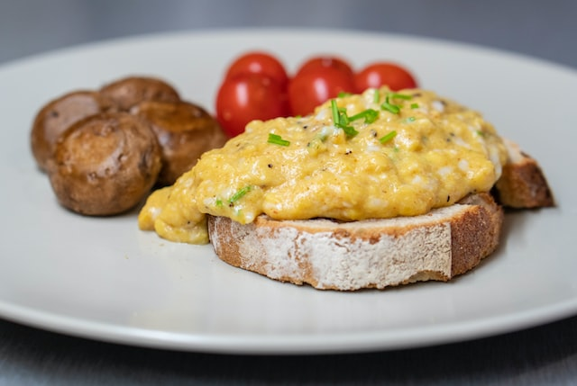

Odin's Scambled Eggs

Description
The right way to scramble eggs. There is more to just mixing eggs and cooking! This will make a believer out of you.
- Prep: 2 mins
- Cook: 4 mins
- Total: 6 mins
- Servings: 1
- Yield: 1 serving
Ingredients
- 2 eggs
- 1 teaspoon mayonnaise or salad dressing
- 1 teaspoon water (Optional)
- 1 teaspoon margarine or butter
- 1 pinch salt and pepper to taste
Directions
- In a cup or small bowl, whisk together the eggs, mayonnaise and water using a fork.
- Melt margarine in a skillet over low heat. Pour in the eggs, and stir constantly as they cook.
- Remove the eggs to a plate when they are set, but still moist. Do not over cook.
- Never add salt or pepper until eggs are on plate, but these are also good without.